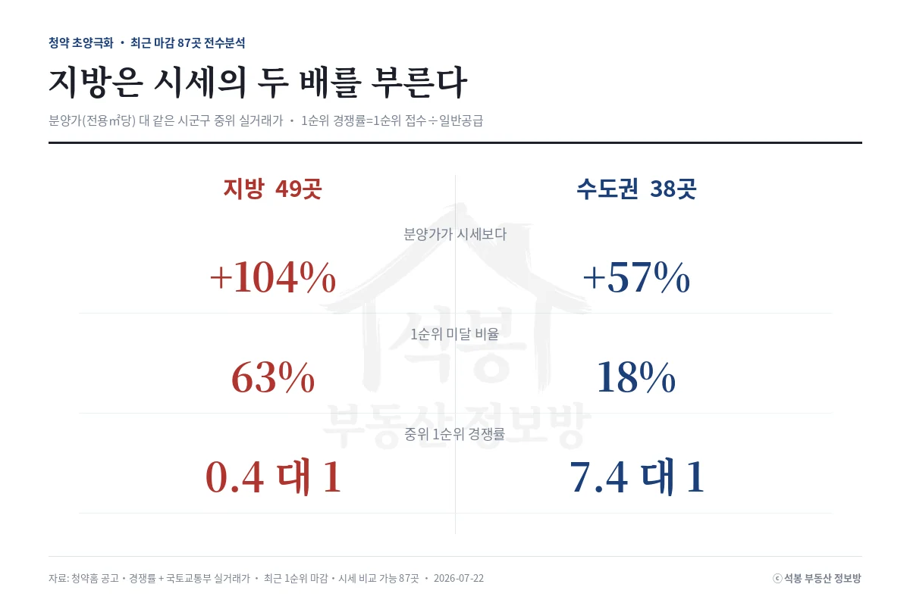
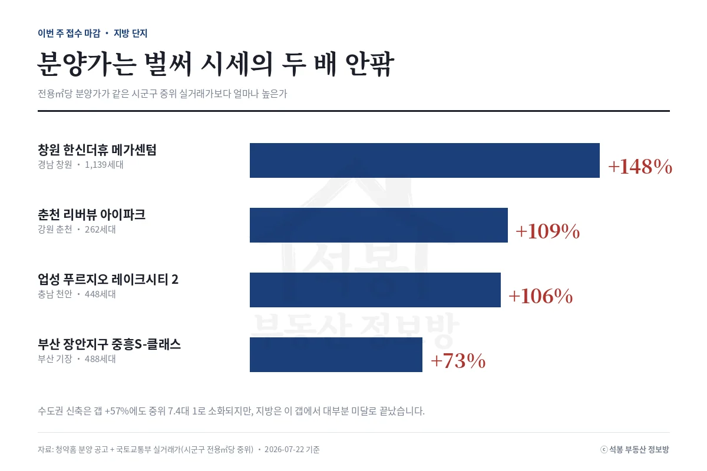

청약을 넣을까 말까 고민할 때 가장 궁금한 건 하나입니다. "이 분양가, 싼 거야 비싼 거야?" 그런데 요즘 지방 청약을 보면 답이 좀 이상합니다. 사람이 안 몰려서 미달이 나는데, 정작 분양가는 근처 아파트 시세보다 훨씬 비쌉니다. 싸서 안 팔리는 게 아니라 비싼데도 안 팔리는 겁니다. 최근 청약을 마친 전국 87개 단지를 하나하나 들여다봤더니, 지방과 수도권이 아예 다른 상황이었습니다.
지방과 수도권, 숫자로 보면

먼저 용어 두 개만 쉽게 짚고 가겠습니다. 1순위 경쟁률은 1순위로 신청한 사람 수를 실제 모집하는 집 수로 나눈 값입니다(정확히는 1순위 접수 건수를 일반공급 세대수로 나눈 값). 이 값이 1대 1을 못 넘기면 신청자가 물량보다 적었다는 뜻, 즉 미달입니다. 그리고 "분양가가 시세보다 비싸다"는, 그 아파트가 있는 지역에서 요즘 실제로 사고팔린 아파트값과 견줘봤다는 의미입니다.
지방 49곳은 분양가가 근처 시세보다 대체로 두 배 넘게(평균 104% 더) 비쌌습니다. 쉽게 말해 옆 아파트가 5억에 거래되는 동네에서 10억을 부른 셈입니다. 그러니 열 곳 중 여섯 곳(63%)이 미달로 끝났습니다. 반면 수도권 38곳은 분양가가 시세보다 비싼 건 마찬가지였지만 그 정도가 절반 수준(평균 57% 더)이었고, 미달은 다섯 곳 중 한 곳(18%) 정도였습니다.
같은 "비싸게 내놨다"라도 지방이 훨씬 심했고, 결과도 그만큼 갈렸습니다. 지난 브리핑에서 분양가가 비쌀수록 사람이 덜 몰린다고 말씀드렸는데, 이번에는 그 "비싼 정도"가 지방에서 유독 크다는 걸 확인한 셈입니다.
여기서부터는 회원에게 보여드립니다
카카오 로그인 3초면 전문을 읽을 수 있습니다. 무료입니다.
가입하시면 지역 시장조사 보고서(약식)를 2회 무료로 요청하실 수 있습니다.
이미 회원이면 같은 버튼으로 로그인만 됩니다
왜 안 팔릴 걸 알면서 비싸게 낼까
이유는 원가에 있습니다. 아파트를 짓는 공사비와 땅값이 최근 몇 년 새 크게 오르면서, 건설사도 분양가를 예전만큼 낮게 매기기 어려워졌습니다. 서울은 그래도 집을 사려는 사람이 워낙 많아 비싼 분양가도 소화가 됩니다. 하지만 지방은 집값 자체가 잘 안 오르는데 분양가만 원가를 따라 계속 올라가니, 시세와의 거리가 자꾸 벌어지는 겁니다. 아래는 최근 청약을 마친 지방 단지들입니다.
단지
지역
분양가가 근처 시세보다
1순위 경쟁률
신제주 동문디이스트 시그니처원Ⅰ
제주
3배 이상 비쌈 (+237%)
0.1대 1 (미달)
트리븐 김해
경남 김해
2.5배 비쌈 (+152%)
0.1대 1 (미달)
김해 신문 센트럴 아이파크
경남 김해
2.4배 비쌈 (+142%)
1.2대 1
에코델타시티 중흥S-클래스 리버시티
부산
1.5배 비쌈 (+49%)
0.1대 1 (미달)
눈여겨볼 곳은 맨 아래 부산 에코델타시티입니다. 이 표에서 분양가가 가장 덜 비쌌는데도(시세의 1.5배) 결국 미달이었습니다. 만약 서울이었다면 이 정도 가격은 무난히 팔렸을 겁니다. 실제로 비슷한 시기 서울 동작의 한 단지는 시세보다 47% 비쌌는데도 1순위에 100명 넘게(114대 1) 몰렸습니다. 똑같이 비싸도 서울이냐 지방이냐에 따라 결과가 정반대로 갈린 겁니다.
지금 청약 받는 지방 단지도 그렇다

이런 흐름은 지금 청약을 받고 있는 단지에서도 똑같이 보입니다. 이번 주 마감하는 지방 단지들도 분양가가 근처 시세보다 한참 높습니다. 창원 한신더휴 메가센텀(1,139세대)은 창원 시세보다 2.5배 가까이(148% 더) 비싸고, 춘천 리버뷰 아이파크는 2배(109% 더), 천안 업성 푸르지오 레이크시티 2단지도 2배(106% 더), 부산 장안지구 중흥S-클래스는 1.7배(73% 더) 수준입니다.
물론 이건 그 지역(시군구) 전체 아파트값 평균과 비교한 숫자라, 감안할 점은 있습니다. 새로 짓는 아파트는 낡은 아파트까지 섞인 평균보다 비쌀 수밖에 없으니까요. 그래도 지방에서 이만큼 격차가 벌어진 단지들이 최근 어떤 성적을 받았는지는 앞에서 본 그대로입니다.
청약 넣기 전에 이것만은
그럼 청약을 넣을 때 뭘 보면 될까요. 분양가가 비싼지 싼지는 그 지역 전체 평균이 아니라, 그 단지 바로 옆 비슷한 새 아파트가 요즘 실제 얼마에 팔리는지와 비교해야 제일 정확합니다. 지역 평균에는 오래된 아파트까지 다 섞여 있어서, 새 아파트 분양가는 원래 좀 비싸 보이기 마련이거든요.
다만 지방은 그 점을 감안하고 봐도 격차가 유난히 큽니다. 시세의 두 배가 넘는 분양가가 최근 지방에서 잇따라 미달로 이어진 건 우연이 아닙니다. 관심 있는 단지가 있다면, 청약 전에 그 동네 최근 실거래가부터 꼭 확인해 보세요. 실거래지도에서 단지 주변 시세를 바로 볼 수 있습니다. 이번 주 청약을 받은 단지들이 실제로 어떤 성적을 받았는지는 결과가 나오는 대로 다시 정리해 드리겠습니다.
원자료: 청약홈 분양 공고·경쟁률, 국토교통부 실거래가 공개시스템(시세는 같은 시군구 전용면적당 중위 실거래가, 2026년 7월 22일 기준, 1순위 마감·시세 비교 가능 87곳 전수) · 분석·제작: 석봉 부동산 정보방 · 본 자료는 정보 제공 목적이며 투자 권유가 아닙니다. 청약 자격·일정은 청약홈 공고문을 반드시 확인하세요.